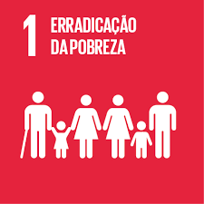
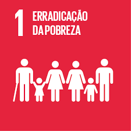

O MINRYL é um grupo feminino com projeto de conscientizar e ajudar nos Objetivos de Desenvolvimento Sustentável da ONU atravéz do uso da tecnologia para auxiliar e ter amplo alcance.
O MINRYL apoia os Objetivos de Desenvolvimento Sustentável da ONU:
 
